Capítulo 10 Pruebas de hipótesis
10.1 Pruebas de hipótesis
Ejemplo: Suponga que se hace un experimento donde se seleccionan 52 nubes al azar y 26 se les inyecta nitrato de plata y a las otras 26 no. Entonces se quiere saber cuál de los dos grupos produce más lluvia.
Los datos de la cantidad de lluvia para este experimento están acá.
## Unseeded.Clouds Seeded.Clouds
## 1 1202.6 2745.6
## 2 830.1 1697.8
## 3 372.4 1656.0
## 4 345.5 978.0
## 5 321.2 703.4
## 6 244.3 489.1Sin embargo usaremos los datos en escala logarítmica para facilitar el cálculo
## Unseeded.Clouds Seeded.Clouds
## 1 7.092241 7.917755
## 2 6.721546 7.437089
## 3 5.919969 7.412160
## 4 5.844993 6.885510
## 5 5.772064 6.555926
## 6 5.498397 6.192567Observe que el comportamiento es distinto en ambos casos.
df <- as.data.frame(nubes) %>%
pivot_longer(
cols = everything(),
names_to = "tratamiento", values_to = "lluvia"
) %>%
mutate(log_lluvia = log(lluvia))
ggplot(data = df) +
geom_histogram(aes(
x = lluvia,
y = ..density..,
fill = tratamiento
),
color = "black", bins = 10
) +
facet_wrap(. ~ tratamiento)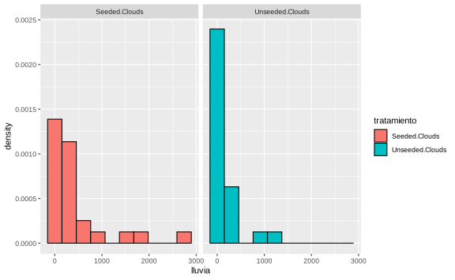
ggplot(data = df) +
geom_histogram(aes(
x = log_lluvia,
y = ..density..,
fill = tratamiento
), color = "black", bins = 10) +
facet_wrap(. ~ tratamiento)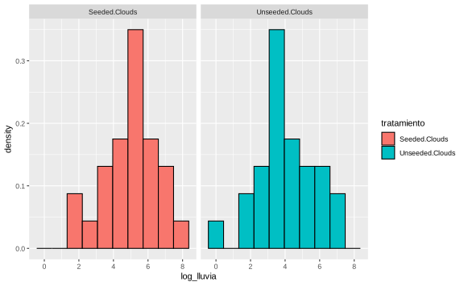
En este caso supondremos que la variable log_lluvia se puede modelar como una
\(N(\mu,\sigma^2)\), \(\mu,\sigma\) desconocidos.
Ejercicio: Queda como ejercicio calcular \(\mathbb P (\mu > 4 \vert X)\) usando un método Bayesiano Normal-Gamma. En este caso la probabilidad tiene que dar \(\approx 99\%\).
El valor de \(\mu>4\) nace a partir de una pregunta de investigación y se fórmula una hipótesis con respecto a los datos.
En este caso sería \(\theta = (\mu,\sigma^2)\), ¿Será cierto que para \(\theta\in\{(\mu,\sigma^2):\mu>4\}\)?
Para el caso bayesiano, ya calculamos \(\mathbb P[\mu>4|X]\).
¿Cómo resolverlo en el caso frecuentista?
Suponga que \(\Omega = \Omega_0 \cup\Omega_1\) conjuntos disjuntos tales que
\[\begin{align*} H_0 : \text{hipótesis en donde }\theta \in \Omega_0.\\ H_1 : \text{hipótesis en donde }\theta \in \Omega_1.\\ \end{align*}\]
Objetivo. Decidir si \(H_0\) o \(H_1\) es cierto, con los datos disponibles (problema de pruebas de hipótesis).
Definición. \(H_0:\) hipótesis nula. \(H_1:\) hipótesis alternativa. Una vez que se ha realizado una prueba de hipótesis si afirmamos \(\theta \in \Omega_1\) decimos que rechazamos \(H_0\). Si \(\theta \in \Omega_0\), decimos que no rechazamos \(H_0\).
Suponga que \(X_1,\dots, X_n\sim f(x|\theta)\), \(\theta \in \Omega\), \(\Omega = \Omega_0 \cup\Omega_1\) y queremos probar la hipótesis \(H_0: \theta \in \Omega_0\), \(H_1: \theta \in \Omega_1\).
Definición (\(i = 0,1\))
Si \(\Omega_i\) tiene solamente un valor de \(\theta\), \(H_i\) es una hipótesis simple.
Si \(\Omega_i\) tiene más de un valor de \(\theta\), \(H_i\) es una hipótesis compuesta.
Hipótesis compuestas de una cola. Si \(\Omega_0 = (-\infty,\theta_0]\), \(H_0: \theta\geq \theta_0\), \(H_1: \theta >\theta_0\). Si \(\Omega_0 = [\theta_0,+\infty)\), \(H_0: \theta\leq \theta_0\), \(H_1: \theta<\theta_0\).
Si \(H_1: \theta \ne \theta_0\) y \(H_0: \theta = \theta_0\) es una hipótesis de 2 colas.
10.2 Regiones críticas y estadísticas de prueba
Ejemplo. Si \(X_1,\dots, X_n \sim N(\mu,\sigma^2)\), \(\mu\) desconocido, \(\sigma^2\) conocido.
Queremos probar \(H_0: \mu = \mu_0\) vs \(H_1: \mu\neq \mu_0\). La lógica es: rechazamos \(H_0\) si \(\mu\) está “muy alejado” de \(\mu_0\).
Seleccione un número \(c\) tal que se rechaza \(H_0\) si \(|\bar X_n -\mu_0|>c\). En general, suponga que queremos probar las hipótesis \(H_0: \theta \in \Omega_0\) vs \(H_1: \theta\in \Omega_1\).
En general, suponga que queremos probar las hipótesis \(H_0: \theta \in \Omega_0\) vs \(H_1: \theta \in \Omega_1\).
Cuando tenemos una muestra \(X_1,\dots,X_n \sim f(x|\theta)\). Sea \(S_0\subset \mathcal X\): conjunto en donde no se rechaza \(H_0\) y \(S_1\subset \mathcal X\): conjunto en donde se rechaza \(H_0\).
A \(S_1\) se le llama región crítica de la prueba de hipótesis.
En el caso en que se rechaza \(H_0\) si \(T>c\) con \(T = |\bar X_n-\mu_0|\) estadístico de prueba y \((c,\infty)\) es la región de rechazo.
X <- matrix(rnorm(1000 * 1000, mean = 2, sd = 3), ncol = 1000)
Xbar <- apply(X, 2, mean)
mu0 <- 2
T <- abs(Xbar - mu0)
c <- seq(-0.25, 0.5, length.out = 1000)
df <- data.frame(c = numeric(), test = logical(), region = character())
for (k in 1:length(c)) {
df <- rbind(df, data.frame(c = c[k], test = mean(T >= c[k]), region = "S_1"))
}
df <- rbind(df, data.frame(c, test = 1 - df$test, region = "S_0"))
ggplot(df, aes(x = c, y = test, color = region)) +
geom_line(size = 2) +
ylab("Promedio de veces donde T >= c") +
theme_minimal()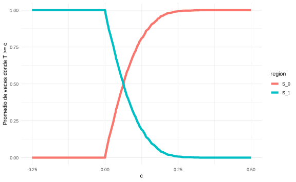
En este caso el valor donde decrece la curva es cercano a 0. Eso quiere decir que antes de ese valor, nos encontramos en la región de rechazo. Luego esa región se va haciendo cada vez más pequeña \(\vert \overline{X} - \mu \vert \approx 0\).
Ojo lo que pasaría si por ejemplo cambiamos a \(\mu = 4\),
mu0 <- 4
T <- abs(Xbar - mu0)
c <- seq(-0.25, 3, length.out = 1000)
df <- data.frame(c = numeric(), test = logical(), region = character())
for (k in 1:length(c)) {
df <- rbind(
df,
data.frame(c = c[k], test = mean(T >= c[k]), region = "S_1")
)
}
df <- rbind(df, data.frame(c, test = 1 - df$test, region = "S_0"))
ggplot(df, aes(x = c, y = test, color = region)) +
geom_line(size = 2) +
ylab("Promedio de veces donde T >= c") +
theme_minimal()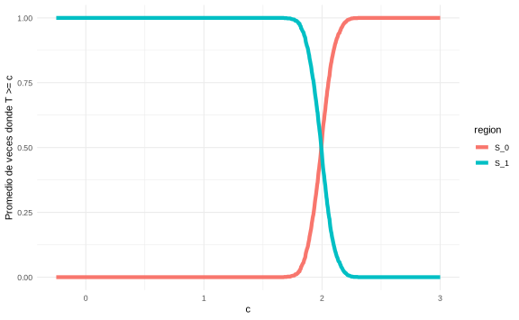
El valor donde comienza a crecer la curva se desvía a un valor cercano a 2.
Nota. En la mayoría de los casos, la región crítica se define en términos de un estadístico \(T = r(x)\).
Definición. Sea $ X$ una muestra aleatoria con distribución \(f(x|\theta)\) y \(T=r(X)\) un estadístico y \(R\subset \mathbb R\). Suponga que se puede verificar las hipótesis al afirmar “rechazamos \(H_0\) si \(T\in R\)”, entonces \(T\) es un estadístico de prueba y \(R\) es la región de rechazo de la prueba.
Continuación del Ejemplo:. Para el caso del ejemplo de la lluvia definimos que
\[ H_0: \mu \leq 4 \text{ versus } H_1: \mu > 4 \]
En este caso podríamos decir que rechazamos \(H_0\) si la media empírica es “más grande” que 4 y no rechazamos \(H_0\) si la media empírica es “más pequeña” que 4.
El problema acá es que “más grande” y “más pequeña” no son términos precisos.
Tenemos dos opciones
Construya la región de critica de la forma
\[\begin{equation} S_{0}=\left\{\boldsymbol{x}:\leq \bar{X}_{n}-\mu_{0} \leq c\right\}, \quad \text { y } \quad S_{1}=S_{0}^{C} \end{equation}\]
y observe cuál es la probabilidad que ocurra para cada tipo de \(c\). El problema con esta construcción es que requiere conocer todos los posibles vectores de datos \(\mathbf{X}\) y construir los conjuntos \(S_0\) y \(S_1\).
Una mejor opción es tener un estadístico sencillo que cumpla dos condiciones:
- Un estadístico sencillo de calcular posiblemente suficiente, minimal y eficiente.
- Un estadístico con una distribución conocida.
En ese caso \(\overline{X}_{n}\) funciona muy bien, porque tiene todas las buenas propiedades de sufiencia, minimalidad y eficiencia, y además sabemos su distribución según lo estudiando en capítulos pasados. Entonces
\[\begin{equation*} U = \frac{n ^{1/2} (\overline{X}_{n} - \mu_0)}{\sigma^\prime} \sim t_{n-1} \end{equation*}\]
Lo natural debería ser rechazar \(H_{0}\) si \(U\) es grande.
## [1] "Unseeded.Clouds" "Seeded.Clouds"Xbarra1 <- mean(lognubes[, 1])
Xbarra2 <- mean(lognubes[, 2])
sigma_prima1 <- sd(lognubes[, 1])
sigma_prima2 <- sd(lognubes[, 2])
n <- dim(lognubes)[1]
(U1 <- sqrt(n) * (Xbarra1 - 4) / sigma_prima1)## [1] -0.02979683## [1] 3.615624ggplot(data = data.frame(x = (c(-1, 4))), mapping = aes(x)) +
stat_function(
fun = dt, args = list(df = n - 1),
mapping = aes(color = "Distribucioń t-student"), size = 2
) +
geom_vline(mapping = aes(
xintercept = U1,
color = "Nubes no tratadas"
), size = 2) +
geom_vline(mapping = aes(
xintercept = U2,
color = "Nubes tratadas"
), size = 2) +
theme_minimal()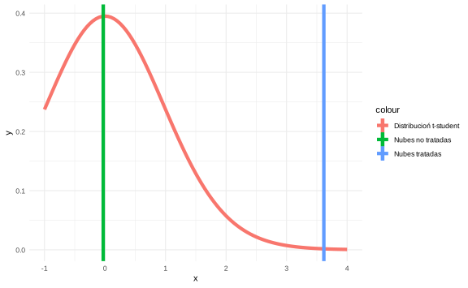
10.3 Función de potencia y tipos de error
Sea \(\delta\) un procedimiento de prueba (basado en una región crítica o en un estadístico de prueba). Sea \(\pi(\theta|\delta)\) (función de potencia) la probabilidad de que se rechace \(H_0\) a través de \(\delta\) para \(\theta\in \Omega\).
Si \(S_1\) es la región crítica de \(\delta\) entonces \(\pi(\theta|\delta) = \mathbb P(X\in S_1|\theta)\) para \(\theta\in\Omega\).
Si \(\delta\) se describe a través de un estadístico de prueba \(T\) con región de rechazo \(R\), entonces \(\pi(\theta|\delta) = \mathbb P(T \in R|\theta)\) para \(\theta\in\Omega\).
Nota. Función de potencia ideal: \(\pi(\theta|\delta) = 0\) si \(\theta\in\Omega_0\), y \(\pi(\theta|\delta) = 1\) si \(\theta\in\Omega_1\).
Ejemplo.
Estadístico de prueba: \(T = |\bar X_n-\mu_0|\).
Región de rechazo: \(R = (c,\infty)\).
Como \(X_1,\dots, X_n \sim N(\mu, \sigma^2)\), \(\mu\) desconocido, \(\sigma^2\) conocido entonces \(\bar X_n \sim N\left(\mu,\dfrac{\sigma^2}{n}\right)\)
- Función de potencia:
\[\begin{align*} \pi(\theta|\delta) = \mathbb P[T\in R|\mu] & = \mathbb P [|\bar X_n -\mu_0|>c|\mu] \\ &= \mathbb P [\bar X_n > \mu_0+c|\mu] + \mathbb P [\bar X_n < \mu_0-c|\mu]\\ & = \mathbb P \bigg[\sqrt n \dfrac{(\bar X_n-\mu)}{\sigma}> \dfrac{(\mu_0+c-\mu)}{\sigma}\sqrt n \bigg|\mu\bigg] + \mathbb P \bigg[\sqrt n \dfrac{(\bar X_n-\mu)}{\sigma}< \dfrac{(\mu_0-c-\mu)}{\sigma}\sqrt n \bigg|\mu\bigg] \\ & = 1-\Phi\left(\sqrt n \dfrac{(\mu_0+c-\mu)}{\sigma} \right) + \Phi\left(\sqrt n \dfrac{(\mu_0-c-\mu)}{\sigma} \right) \end{align*}\]
mu0 <- 4
c <- 2
n <- 100
sigma <- 3
mu <- seq(0, 8, length.out = 1000)
funcion_de_poder <- 1 -
pnorm(sqrt(n) * (mu0 + c - mu) / sigma) +
pnorm(sqrt(n) * (mu0 - c - mu) / sigma)
df <- data.frame(mu, funcion_de_poder, tipo = "Función de poder")
df <- rbind(df, data.frame(mu,
funcion_de_poder = 1 - df$funcion_de_poder,
tipo = "1 - Función de poder"
))
ggplot(df, aes(mu, funcion_de_poder, color = tipo)) +
geom_line(size = 2) +
theme_minimal()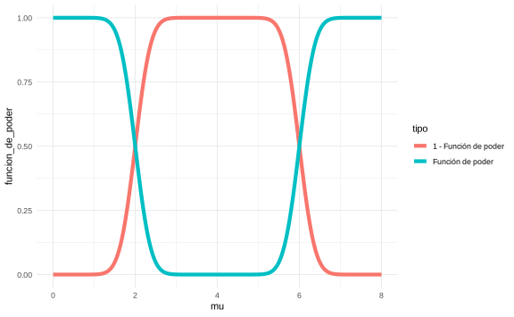
mu <- seq(0, 8, length.out = 100)
c <- seq(0, 4, length.out = 100)
mu_c <- expand.grid(mu, c)
funcion_de_poder_n_c <- 1 -
pnorm(sqrt(n) * (mu0 + mu_c[, 2] - mu_c[, 1]) / sigma) +
pnorm(sqrt(n) * (mu0 - mu_c[, 2] - mu_c[, 1]) / sigma)
library(scatterplot3d)
scatterplot3d(mu_c[, 2], mu_c[, 1], funcion_de_poder_n_c,
type = "p", angle = 60,
xlab = "c", ylab = "mu", zlab = "Función de poder"
)
Tipos de error:
En este tipo de pruebas se puede cometer dos tipos de errores,
Error Tipo I: error de rechazar \(H_0\) si \(\theta \in \Omega_0\).
Error Tipo II: error de no rechazar \(H_0\) si \(\theta\in\Omega_1\) en términos de la función de potencia.
En términos de la función de poder tenemos que
- Si \(\theta \in \Omega_0\): \(\pi(\theta|\delta)\) es el error tipo I.
- Si \(\theta \in \Omega_1\): \(1-\pi(\theta|\delta)\) es el error tipo II.
El objetivo es hacer \(\pi(\theta|\delta)\) pequeño cuando \(\theta\in\Omega_0\). También se requiere que \(\pi(\theta|\delta)\) sea grande cuando \(\theta \in\Omega_1\). Una forma de alcanzar ese balance es seleccionar \(\alpha_0 \in (0,1)\) tal que
\[\pi(\theta|\delta) \leq \alpha_0\;\forall \theta\in\Omega_0\quad(*)\] y entre todas las pruebas que cumplan \((*)\) se selecciona aquella que maximice la potencia para \(\theta \in \Omega_1\).
En nuestro ejemplo suponga que elegimos \(\alpha_{0} = 0.1\). La región roja indica donde estaría ubicado \(\pi(\theta\vert \delta)\leq \alpha_{0}\).
ggplot() +
geom_line(
data = df,
mapping = aes(x = mu, y = funcion_de_poder, color = tipo), size = 2
) +
geom_rect(
data = data.frame(xmin = 0, xmax = 8, ymin = 0, ymax = 0.10),
mapping = aes(xmin = xmin, xmax = xmax, ymin = ymin, ymax = ymax),
alpha = 0.5, fill = "red"
) +
geom_hline(yintercept = 0.05) +
theme_minimal()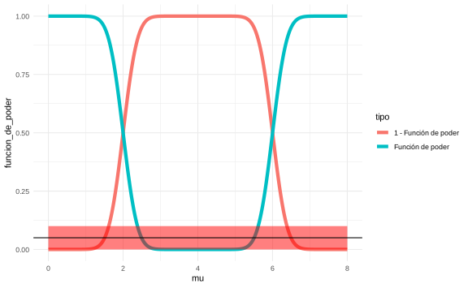
Otra forma es minimizar;
\[w_1\cdot\text{Error I } + w_2\cdot\text{Error II};\] \(w_1,w_2\) constantes.
Nota. Bajo la primera solución se produce una asimetría entre las hipótesis, ya que resulta difícil (o muy costoso) que ambas condiciones se cumplan. Por lo general, se le da más énfasis a \((*)\), por lo que se trata de controlar el error más serio (Error tipo I).
Definición. Una prueba que satisface \((*)\) se llama una prueba de nivel \(\alpha_0\) y decimos que la prueba está a un nivel de significancia \(\alpha_0\). Además el tamaño \(\alpha(\delta)\) de una prueba \(\delta\) se define como:
\[\alpha(\delta) = \sup_{\theta\in\Omega}\pi(\theta|\delta).\]
Corolario. Una prueba \(\delta\) es una prueba de nivel \(\alpha_0\) si y solo si su tamaño es a lo sumo \(\alpha_0\) (\(\alpha(\delta)\leq\alpha_0\)).
Ejemplo. Suponga \(X_1,\dots,X_n\sim \text{Unif}(0,\theta)\), \(\theta>0\) desconocido. Se quiere probar las siguientes hipótesis:
\[H_0: 3\leq\theta\leq 4 \quad H_1:\theta<3 \text{ o }\theta>4. \]
El MLE de \(\theta\) es \(Y_n = X_{(n)}\). Si \(n\) es grande, \(Y_n\) es muy cercano a \(\theta\).
Suponga que definimos que la prueba \(\delta\) no rechaza \(H_0\) si \(2.9<Y_n<4\) y rechaza \(H_0\) si \(Y_n\geq4\) o \(Y_n\leq2.9\). Entonces \(R = (-\infty, 2.9] \cup [4,+\infty)\) y la función de potencia
\[ \pi(\theta|\delta) = \mathbb P[Y_n\leq 2.9|\theta]+\mathbb P[Y_n\geq4|\theta] \]
\(\pi(\theta|\delta)\) se calcula en varios casos:
Si \(\theta\leq 2.9 \implies \mathbb P[Y_n\leq 2.9|\theta] = 1\) y \(\mathbb P[Y_n\geq4|\theta] = 0\).
Si \(2.9<\theta\leq4 \implies \mathbb P[Y_n\leq 2.9|\theta] = 1 - \prod_{i=1}^n \mathbb P[X_i\leq2.9|\theta] = \left(\dfrac{2.9}{\theta}\right)^n\) y \(\mathbb P[Y_n\geq4|\theta] = 0\).
Si \(\theta>4 \implies \mathbb P[Y_n\leq 2.9|\theta] = \left(\dfrac{2.9}{\theta}\right)^n\) y \(\mathbb P[Y_n\geq 4|\theta] = 1 - \displaystyle\prod_{i=1}^n \mathbb P[X_i<4|\theta] = 1-\left(\dfrac 4\theta\right)^n\).
Entonces
\[ \pi(\theta|\delta) = \begin{cases}1 & \text{si } \theta\leq 2.9 \\ \left(\dfrac{2.9}{\theta}\right)^n& \text{si } 2.9 <\theta\leq 4\\ 1+\left(\dfrac{2.9}\theta\right)^n-\left(\dfrac{4}\theta\right)^n & \text{si } \theta >4\end{cases} \]
theta <- seq(1, 5, length.out = 1000)
n <- 5
funcion_poder <- numeric()
for (k in 1:length(theta)) {
if (theta[k] < 2.9) {
funcion_poder[k] <- 0
} else if (theta[k] > 2.9 & theta[k] <= 4) {
funcion_poder[k] <- (2.9 / theta[k])^n
} else if (theta[k] > 4) {
funcion_poder[k] <- (2.9 / theta[k])^n + 1 - (4 / theta[k])^n
}
}
plot(theta, funcion_poder, type = "l")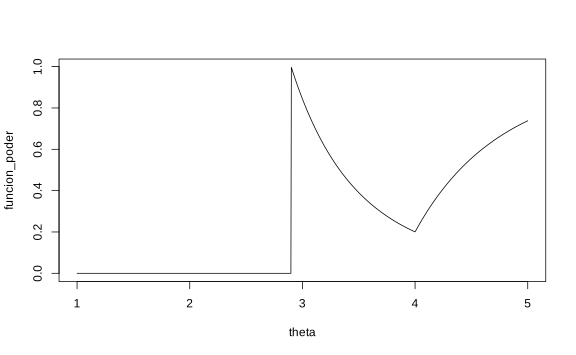
Note, además, que el tamaño de prueba es
\[\alpha(\delta) = \sup_{3\leq\theta\leq 4} \pi(\theta|\delta) = \sup_{3\leq\theta\leq 4}\left(\dfrac{2.9}{\theta}\right)^n = \left(\dfrac{2.9}{3}\right)^n.\]
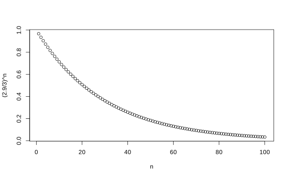
Si \(n = 68 \implies \alpha(\delta)= \left(\dfrac{2.9}{3}\right)^{68} = 0.0997.\)
Entonces si \(n = 68\), entonces \(\delta\) es una prueba con nivel de significancia \(\alpha_0\geq 0.0997\).
Pregunta importante: ¿Cómo diseñar una prueba para que tenga un cierto nivel de significancia?
Suponga que queremos probar \(H_0: \theta \in \Omega_0\) vs \(H_1: \theta\in\Omega_1\). Sea \(T\) un estadístico de prueba y suponga que si \(T\geq c\), \(c\) constante, entonces rechazamos \(H_0\).
Si queremos que nuestra prueba tenga nivel de significancia \(\alpha_0\) entonces:
\[\pi(\theta|\delta) = \mathbb P(T\geq c|\theta)\text{ y } \sup_{\theta \in \Omega_0}\mathbb P[T\geq c|\theta] \leq \alpha_0 \quad (*)\]
Note que \(\pi(\theta|\delta)\) es función no-creciente de \(c\), entonces \((*)\) se cumple para valores grandes de \(c\), si \(\theta\in\Omega_0\). Si \(\theta \in \Omega_1\), debemos escoger \(c\) pequeño para maximizar \(\pi(\theta|\delta)\).
Ejemplo. En el caso normal, donde \(H_0: \mu = \mu_0\) y rechazamos \(H_0\) si \(|\bar X_n-\mu_0|\geq c\). Entonces:
\[\sup_{\theta\in\Omega_0} \mathbb P [T\geq c|\theta] = \mathbb P_{\mu_0}[|\bar X_n-\mu_0|\geq c]\geq \alpha_0.\]
Como bajo \(H_0\): \(Y = X_n-\mu_0 \sim N\left(0,\dfrac{\sigma^2}{n}\right)\), entonces podemos encontrar \(c\) tal que \[\mathbb P[|\bar X_n-\mu_0|\geq c] = \alpha_0,\] y cualquier \(c\) mayor va a cumplir \((*)\).
De esta manera el problema se convierte en encontrar \(c^*\) tal que \(\mathbb P[|Z|>c^*] = \alpha_0\), donde \(Z = \dfrac{\bar X_n - \mu_0}{\sigma/\sqrt n}\).
Note que
\[\begin{align*} \alpha_0 &= \mathbb{P}(|Z|>c ^{*}) \\ &= \mathbb{P}(Z >c ^{*}) + \mathbb{P}(Z < -c ^{*}) \\ &= 1- \mathbb{P}(Z \leq c ^{*}) + \mathbb{P}(Z < -c ^{*}) \\ &= 1- \mathbb{P}(Z \leq c ^{*}) + 1 - \mathbb{P}(Z < c ^{*}) \\ &= 2 - 2 \mathbb{P}(Z \leq c ^{*}) \end{align*}\]
Entonces
\[\begin{equation*} \mathbb{P}(Z \leq c ^{*}) = 1- \dfrac{\alpha_0}{2} \end{equation*}\]
Por lo tanto el \(c ^{*}\) que se busca es
\[\begin{equation*} c^* = F^{-1}\left(1- \dfrac{\alpha_0}{2}\right) \end{equation*}\]
En el caso particular de la normal denotaremos \(F\) como \(\Phi\). Entonces,
\[\Phi(c^*) = 1 - \dfrac{\alpha_0}2 \implies c^* = z_{1-\frac{\alpha_0}2}.\]
Procedimiento: rechazamos \(H_0\) si \[|Z| = \bigg| \dfrac{\bar X_n-\mu_0}{\sigma/\sqrt n}\bigg| \geq z_{1-\frac{\alpha_0}2}.\]
n <- 10
alpha0 <- 0.05
X <- rnorm(n = n, mean = 5, sd = 1)
Xbar <- mean(X)
mu0 <- 5
Z <- sqrt(n) * (Xbar - mu0) / 1
(q <- qnorm(1 - alpha0 / 2))## [1] 1.959964dnorm_limit <- function(x, q) {
y <- dnorm(x)
y[-q <= x & x <= q] <- NA
return(y)
}
ggplot(data.frame(x = c(-3, 3)), aes(x)) +
stat_function(
fun = dnorm_limit, geom = "area", args = list(q = q),
fill = "blue", alpha = 0.2
) +
stat_function(fun = dnorm) +
theme_minimal()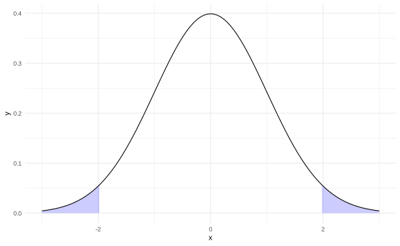
La pregunta que debemos siempre responder es ¿Rechazamos \(H_0\)?
## [1] FALSESi repetimos el ejercicio anterior, pero los datos tiene media igual a 1 y dejamos que \(\mu_0 = 5\), entonces
n <- 10
alpha0 <- 0.05
X <- rnorm(n = n, mean = 1, sd = 1)
Xbar <- mean(X)
mu0 <- 5
Z <- sqrt(n) * (Xbar - mu0) / 1Si preguntamos ¿Rechazamos \(H_0\)?
## [1] TRUEmu0 <- 5
n <- 10
sigma <- 1
alpha0 <- 0.05
c <- qnorm(1 - alpha0 / 2) * sigma / sqrt(n)
mu <- seq(3, 7, length.out = 1000)
funcion_de_poder <- 1 -
pnorm(sqrt(n) * (mu0 + c - mu) / sigma) +
pnorm(sqrt(n) * (mu0 - c - mu) / sigma)
plot(mu, funcion_de_poder, type = "l", lwd = 2)
abline(h = 0.05, col = "red", lwd = 2)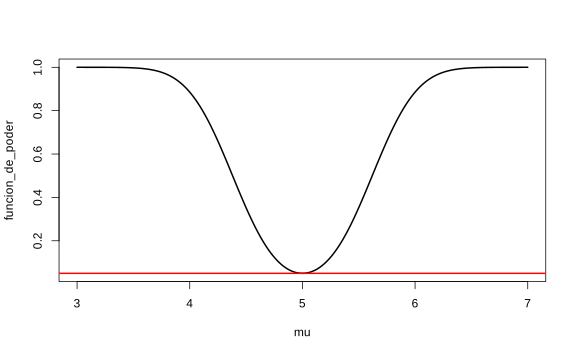
Ejemplo. \(X_1,\dots,X_n \sim \text{Ber}(p)\). \[H_0: p\leq p_{0} \text{ vs } H_1: p>p_0\]
Sea \(Y = \sum_{i=1}^nX_i \sim \text{Binomial}(n,p)\). La idea acá es que entre más grande es \(p\) entonces más grande esperamos que sea \(Y\). Podemos definir la regla que rechazo \(H_0\) si \(Y\geq c\) para alguna constante \(c\).
El error tipo I es
\[\mathbb P[Y\geq c|p] = \sum_{y=c}^n{n\choose y}p^y(1-p)^{n-y} = \sum_{y=c}^n{n\choose y} \underbrace{\left(\dfrac p{1-p}\right)^y(1-p)^n}_{g(p)}\]
\(g(p)\) es monótona con respecto a p.Entonces \[\sup_{p\leq p_0} \mathbb P[Y\geq c|p] = \mathbb P [Y\geq c|p_0] \leq \alpha_0.\]
Si \(n=10\), \(p_0 = 0.3\), \(\alpha_0 = 10\%\), entonces
| c | 0 | 1 | 2 | 3 | 4 | 5 |
|---|---|---|---|---|---|---|
| \(\mathbb P[Y\geq c|p_0]\) | 1 | 0.97 | 0.85 | 0.62 | 0.15 | 0.05 |
Para que el tamaño sea menor que \(10\%\) seleccione \(c>5\). Si \(c\in [5,6]\) entonces el nivel de significancia es a lo sumo \(0.15\) y la prueba no cambia (ya que \(Y\) es una variable discreta).
c <- 5
n <- 10
alpha0 <- 0.05
p <- seq(0, 1, length.out = 1000)
funcion_de_poder <- 1 - pbinom(q = c, size = n, prob = p)
plot(p, funcion_de_poder, type = "l", lwd = 2)
abline(h = 0.05, col = "red", lwd = 2)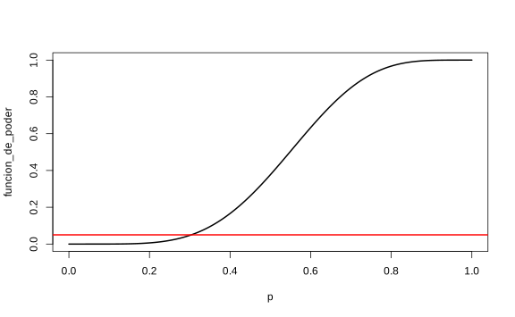 Procedimiento: rechazamos \(H_0: p \leq 0.3\) si \(Y\geq c\), \(c\in(5,6]\) con un nivel de significancia de \(10\%\) a lo sumo.
10.4 Valor \(p\)
Restricción. El procedimiento de prueba depende de \(\alpha_0\).
Pregunta. ¿Será posible construir un estadístico que resuma el grado de evidencia en los datos en contra de \(H_0\)?
Respuesta. Cualquier procedimiento usa las siguientes dos fuentes:
El valor observado del estadístico de prueba.
Todos los valores de \(\alpha_0\) en donde rechazamos la nula.
Ejemplo (Caso Normal). Se rechaza \(H_0: \mu = \mu_0\) si \(|Z|>z_{1-\frac{\alpha_0}2}\)
Ahora si \(\alpha_0 = 0.05\) y \(z_{1-\frac{\alpha_0}2} = 1.96\), entonces para \(Z = 1.97\) y \(Z = 2.78\) y \(Z = 6.97\) todos cumplen esa condición.
¿Entonces la pregunta es cuál es mejor?
Una forma de estimar esa “fuerza”, es partir del cuantil real de la distribución
\[\begin{align*} \Phi(Z) &> 1-\dfrac{\alpha_0}2 \\ \alpha_0 &> 2(1-\Phi(Z)) \end{align*}\]
- Si \(Z=1.97\) entonces \(\alpha _{0} =0.0488384\)
- Si \(Z=2.78\) entonces \(\alpha _{0} =0.0054359\)
- Si \(Z=6.97\) entonces \(\alpha _{0} =3.1694647\times 10^{-12}\)
En cada caso se estimó usando el comando 2*(1-pnorm(1.97)) por ejemplo.
El valor \(\alpha_0\) se le conoce como valor de significancia.
Definición. El valor-\(p\) es el nivel más pequeño de significancia en donde rechazaríamos \(H_0\) bajo los datos observados.
Nota. El valor-\(p\) es un estadístico.
Si \(\text{valor-}p<\alpha_0\), rechazo \(H_0\). (El valor-\(p\) es muy pequeño).
Si \(\text{valor-}p>\alpha_0\), no rechazo \(H_0\). (El valor-\(p\) es muy grande).
Cálculo del valor-\(p\)
Región de rechazo: \(T\geq c\).
Decisión de rechazo: para cada \(t\), rechazamos \(H_0\) si \(T\geq t\) con \(t\geq F^{-1}(1-\alpha_0)\), \(F\) distribución de \(T\).
Entonces
\[F(t) \geq 1-\alpha_0 \implies \alpha_0 \geq \mathbb P_\theta[T\geq t] \implies \alpha_0 \geq \sup_{\theta\in\Omega}P_{\theta}[T\geq t]\]
El tamaño de la prueba es \(c=t\).
Ejemplo. Retomando el ejemplo con las variables aleatorias Bernouilli, rechazamos \(H_0: p\leq p_0\) si \(Y\geq c\). Así,
\[\text{valor-$p$} = \sup_{p\in\Omega}P_{p}[Y\geq y] =P_{p}[Y\geq y] \]
Si \(p_0 = 0.3, n=10, y =6\), entonces el valor correspondiente es \(P_{p}[Y\geq 6] 0.047349\). El código R es
pbinom(q = 5, size = 10, prob = 0.3, lower.tail = FALSE)
10.5 Dualidad entre pruebas de hipótesis y regiones de confianza
Teorema. Sea \(X = (X_1,\dots,X_n)\) una muestra con distribución \(F_\theta\). Sea \(g(\theta)\) una función tal que para cada valor \(g_0\) de \(g(\theta)\), existe una prueba con nivel \(\alpha_0\) de las hipótesis:
\[H_{0,g_0}: g(\theta) = g_0 \text{ vs } H_{1,g_0}: g(\theta) \neq g_0. \]
Defina para cada \(x\in X\)
\[\omega(x) = \{g_0: \delta_{g_0} \text{ no rechaza }H_{0,g_0}\text{ si }X=x\} \quad (*)\]
Sea \(\gamma = 1-\alpha_0\). Entonces \[\mathbb P[g(\theta_0)\in \omega(x)|\theta = \theta_0 ] \geq \gamma, \;\forall \theta_0 \in \Omega.\]
Definición. Si \(\omega(x)\) satisface \((*)\) \(\forall \theta_0 \in \Omega\), entonces \(\omega(x)\) es un conjunto de confianza con coeficiente \(\gamma\) donde \(\gamma = 1-\alpha_0\).
Teorema. Bajo las condiciones anteriores, si \(\omega(x)\) es un conjunto de confianza para \(g_0\), entonces construimos \(\delta_{g_0}\): no rechazo \(H_{0,g_0}\) si y solo si \(g_0 \in \omega(X)\), entonces \(\delta_{g_0}\) es una prueba con nivel \(\alpha_0 = 1-\gamma\) para \(H_{0,g_0}\).
Ejemplo. \(X_1,\dots,X_n\sim N(\mu,\sigma^2)\), \(\theta = (\mu,\sigma^2)\) (desconocidos). En este caso \(g(\theta) = \mu\). El intervalo de confianza con nivel \(gamma\) es
\[\bar X_n\pm t_{n-1,\frac{1+\gamma}2}\dfrac{\sigma'}{\sqrt n}.\]
La hipótesis de interés corresponde a
\[ H_0: \mu = \mu_0 \text{ vs } H_1: \mu \ne \mu_0.\]
Por los teoremas anteriores, \(H_0\) se rechaza si \(\mu_0\) no está en el IC, es decir, si y solo si
\[\mu_0 > \bar X_n+ t_{n-1,\frac{1+\gamma}2}\dfrac{\sigma'}{\sqrt n} \text{ o } \mu_0 < \bar X_n- t_{n-1,\frac{1+\gamma}2}\dfrac{\sigma'}{\sqrt n},\] que se puede resumir como
\[\bigg|\dfrac{\bar X_n-\mu_0}{\sigma'/\sqrt n}\bigg|>t_{n-1,1-\frac{\alpha}2}.\]
n <- 1000
gamma <- 0.95
alpha <- 0.95
X <- rnorm(n = n, mean = 1, sd = 2)
mu0 <- 1
Xbar <- mean(X)
sigma_prima <- sd(X)
t_quantil <- qt(p = (1 + gamma) / 2, df = n - 1)El intervalo de confianza es
## [1] 0.7678789 1.0139517\[ H_0: \mu = 1 \text{ vs } H_1: \mu \ne 1.\]
Para probar esta prueba se debe comprobar que
Preguntamos ¿Rechazamos \(H_0\)?
## [1] FALSESi tuvieramos otros datos con otra media, el resultado será diferente.
n <- 1000
gamma <- 0.95
alpha <- 0.95
X <- rnorm(n = n, mean = 5, sd = 2)
mu0 <- 1
Xbar <- mean(X)
sigma_prima <- sd(X)
t_quantil <- qt(p = (1 + gamma) / 2, df = n - 1)
c(Xbar - t_quantil * sigma_prima / sqrt(n),
Xbar + t_quantil * sigma_prima / sqrt(n))## [1] 4.853676 5.103191¿Rechazamos \(H_0\)?
## [1] TRUEEjemplo. \(X_1,\dots,X_n\sim N(\mu,\sigma^2)\), \(\mu\) desconocido, \(\sigma^2\) conocido. Construya un intervalo de confianza con nivel \(\gamma\) a partir de \[ H_0: \mu = \mu_0 \text{ vs } H_1: \mu \ne \mu_0.\]
Rechazamos \(H_0\) si \[\bigg|\dfrac{\bar X_n-\mu_0}{\sigma/\sqrt n}\bigg|\geq z_{1-\frac{\alpha_0}2}.\]
al nivel \(\alpha_0\). Usando los teoremas anteriores, una región de confianza con nivel \(\gamma = 1-\alpha_0\) satisface:
\[\mu\in\bigg\{ \bigg|\dfrac{\bar X_n-\mu}{\sigma/\sqrt n}\bigg|< z_{1-\frac{\alpha_0}2}\bigg\} = \omega(x)\]
Por tanto,
\[\begin{align*} \bigg|\dfrac{\bar X_n-\mu}{\sigma/\sqrt n}\bigg| & \Leftrightarrow -\dfrac{\sigma}{\sqrt n}z_{1-\frac{\alpha_0}2}<\bar X_n - \mu<\dfrac{\sigma}{\sqrt n}z_{1-\frac{\alpha_0}2}\\ & = \Leftrightarrow \bar X_n-\dfrac{\sigma}{\sqrt n}z_{1-\frac{\alpha_0}2}< \mu<\bar X_n + \dfrac{\sigma}{\sqrt n}z_{1-\frac{\alpha_0}2} \end{align*}\] que es el IC con nivel \(\gamma\) para \(\mu\).
10.5.1 Dualidad en pruebas unilaterales
Si \(X = (X_1,\dots, X_n)\) es una muestra según \(F_\theta\) y \(g(\theta)\) es una función de variable real, suponga que para cada \(g_0\in Im(g)\) existe una prueba \(\delta_{g_0}\) con nivel \(\alpha_0\) de las hipótesis anteriores. Si \[\omega(x) = \{g_0: \delta_{g_0} \text{ no rechaza }H_{0,g_0}\text{ si }X=x\}\]
y si \(\gamma = 1-\alpha_0\), entonces \(\omega(x)\) es una región de confianza para \(g(\theta)\) con nivel \(\gamma\).
Ejemplo (Bernoulli).
\[ H_0: p \leq p_0 \text{ vs } H_1: p>p_0.\]
El criterio de rechazo al nivel \(\alpha_0\) es
\[Y = \sum_{i=1}^nX_i\geq c(p_0)\]
donde
\[\sup_{p\leq p_0} \mathbb P_p[Y\geq c] = \mathbb P_{p_0}[Y\geq c] \leq \alpha_0.\]
Entonces
\[\omega(x) = \{p_0: Y<c(p_0)\} = \{p_0: \text{valor-}p>\alpha_0\}.\]
Si \(n=10\), \(Y=6\), \(\alpha_0 = 10\%\), \[\omega(x) =\{p_0: P_{p_0}[Y> 6] >0.1\}.\]
Numéricamente, si \(p_0 > 35.42\% \implies p_0 \in \omega(x)\), entonces \(\omega(x) = (0.3542,1]\) si \(\alpha_0=10\%\) y es un IC para \(p_0\) con nivel de 90%.
Ejemplo. \(X = (X_1,\dots, X_n)\sim N(\mu,\sigma^2)\), \(\theta = (\mu,\sigma^2)\) desconocido. Queremos probar \[ H_0: \mu \leq \mu_0 \text{ vs } H_1: \mu > \mu_0.\] Por dualidad, basta con conocer un IC unilateral para \(\mu\):
\[ \left(\bar X_n-t_{n-1,\gamma}\dfrac{\sigma'}{\sqrt n},\infty\right).\]
Rechazamos \(H_0\) si
\[\mu_0\leq \bar X_n-t_{n-1,\gamma}\dfrac{\sigma'}{\sqrt n} \Leftrightarrow T = \dfrac{\bar X_n -\mu_0}{\sigma'/\sqrt n}\geq t_{n-1,\gamma}\]
(rechazando en la cola derecha de T).
10.5.2 Pruebas de cociente de verosimilitud (LRT)
Si \(H_0:\theta \in \Omega_0\) vs \(H_1: \theta \in \Omega_0^c = \Omega_1\). El estadístico LRT se define como
\[\Lambda (x) = \dfrac{\sup_{\theta\in \Omega_0} f_n(x|\theta)}{\sup_{\theta\in \Omega} f_n(x|\theta)}.\]
Una prueba de cociente de verosimilitud rechaza \(H_0\) si \(\Lambda(x)\leq k\), para una constante \(k\).
Ejemplo. Supongamos que se observa \(Y\) el número de éxitos en el experimento \(\text{Bernoulli}(\theta)\) con tamaño de muestra \(n\).
\[H_0: \theta = \theta_0 \text{ vs } H_1: \theta\ne\theta_0.\]
Verosimilitud: \(f(y|\theta) = {n\choose y}\theta ^y(1-\theta)^{n-y}\).
\(\Omega_0 = \{\theta_0\}\), \(\Omega_1 = [0,1]\setminus \{\theta_0\}\).
Numerador: \(f(y|\theta_0)\).
Denominador: \(f(y|\bar y) = \displaystyle{n\choose y}{\bar y}^{y}(1-\bar y)^{n-y}\).
\[\Lambda(y) = \dfrac{f(y|\theta_0)}{f(y|\bar y)} = \left(\dfrac{n\theta_0}{y}\right)^y\left(\dfrac{n(1-\theta_0)}{n-y}\right)^{n-y}, \quad y=0,\dots,n.\]
Si \(n=10\), \(\theta_0 = 0.3\), \(y = 6\), \(\alpha_0=0.05\).
n <- 10
p0 <- 0.3
y <- 0:10
alpha0 <- 0.05
p <- choose(n, y) * p0^y * (1 - p0)^(n - y)
Lambda <- numeric(n)
Lambda[y == 0] <- (1 - p0)^n
ym1 <- y[y != 0]
Lambda[y != 0] <- (n * p0 / ym1)^ym1 * ((n * (1 - p0)) / (n - ym1))^(n - ym1)
plot(y, Lambda, type = "l", col = "blue")
lines(y, p, type = "l", col = "red")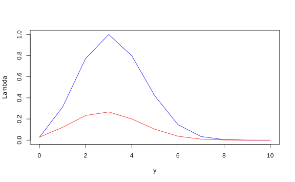
| y | Lambda | p |
|---|---|---|
| 0 | 0.0282475 | 0.0282475 |
| 1 | 0.3124791 | 0.1210608 |
| 2 | 0.7731201 | 0.2334744 |
| 3 | 1.0000000 | 0.2668279 |
| 4 | 0.7978583 | 0.2001209 |
| 5 | 0.4182119 | 0.1029193 |
| 6 | 0.1465454 | 0.0367569 |
| 7 | 0.0337359 | 0.0090017 |
| 8 | 0.0047906 | 0.0014467 |
| 9 | 0.0003556 | 0.0001378 |
| 10 | 0.0000059 | 0.0000059 |
| 10 | 0.0000059 |
| 9 | 0.0001437 |
| 8 | 0.0015904 |
| 7 | 0.0105921 |
| 0 | 0.0388396 |
| 6 | 0.0755965 |
| 5 | 0.1785159 |
| 1 | 0.2995767 |
| 4 | 0.4996976 |
| 2 | 0.7331721 |
| 3 | 1.0000000 |
Rechazamos \(H_0\) con nivel \(\alpha_0 = 0.05\) en \(y \in\{10,9,8,7,0\}\) y \(k\in [0.028,0.147)\) si rechazo cuando \(\Lambda(y)\leq k\). El tamaño de prueba es \[\mathbb P_{0.3}[\text{Rechazo}] = \mathbb{P}_{0.3}[Y\in \{10,9,8,7,0\}] = 0.039.\]
Teorema. Sea \(\Omega\) un abierto en \(\mathbb R^p\) y suponga que \(H_0\) especifica \(k\) coordenadas de \(\theta\), igualándolas a valores fijos. Asuma que \(H_0\) es cierto y que todas las condiciones de regularidad de \(\theta\) son ciertas. \[-2\ln\Lambda(x)\xrightarrow[H_0]{d}\chi^2_k.\]
Ejemplo. Del caso anterior, \(k=1\), \(\alpha_0 = 5\%\). Rechazamos \(H_0\): \[-2\ln \Lambda(y)>\chi^2_{1,1-0.05} = F^{-1}_{\chi^2_1}(0.95) = 3.841.\]
Rechazamos \(H_0\) bajo la misma región del ejemplo anterior.
## [1] 7.1334989 2.3264351 0.5146418 0.0000000 0.4516484 1.7435339
## [7] 3.8408399 6.7783829 10.6822162 15.8832009 24.0794561## [1] 3.841459¿Rechazamos \(H_0\)?
| y | test |
|---|---|
| 0 | TRUE |
| 1 | FALSE |
| 2 | FALSE |
| 3 | FALSE |
| 4 | FALSE |
| 5 | FALSE |
| 6 | FALSE |
| 7 | TRUE |
| 8 | TRUE |
| 9 | TRUE |
| 10 | TRUE |